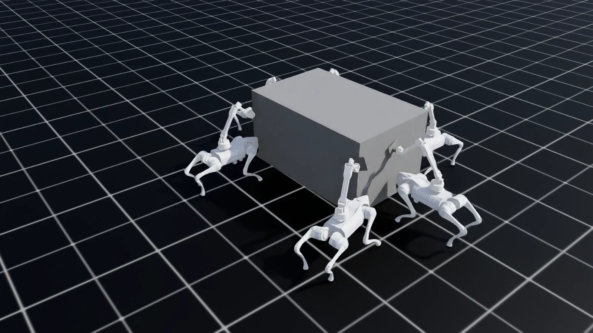
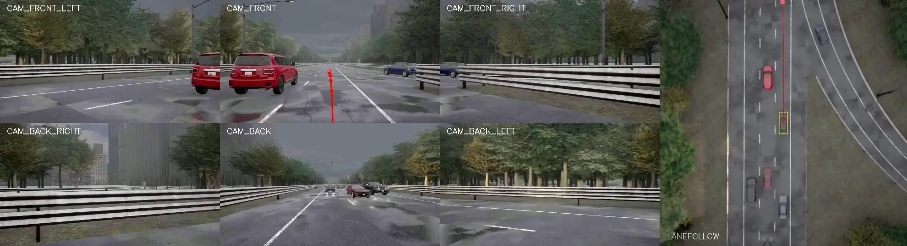

PPO / MuJoCo / Unitree Go2 & G1
机器人强化学习运动控制
训练 Go2 平地速度追踪、复杂地形运动和 G1 舞蹈跟踪策略。三项任务从速度指令、地形感知到全身参考动作，均有检查点回放。
查看项目 ↗
机器人强化学习运动控制、多机器人协同搬运与规划、自动驾驶决策。
PPO / MuJoCo / Unitree Go2 & G1
训练 Go2 平地速度追踪、复杂地形运动和 G1 舞蹈跟踪策略。三项任务从速度指令、地形感知到全身参考动作，均有检查点回放。
查看项目 ↗


